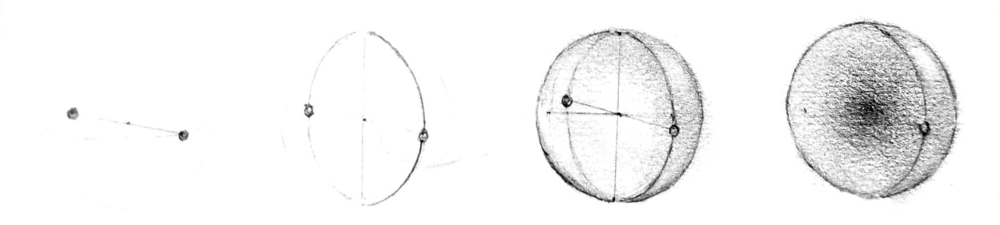

The wishdrops conjecture
That were the universe but one spinning sphere. A belief and a lament simultaneously. The belief is that a single sphere of infinite dimension – always spinning, no preferred direction – is the energetic wellspring of the universe we experience. We call this the wishdrops conjecture. A simple, elegant, latent geometry underpins our vast, complex physical universe – that's our guess, at least. Particles, constellations, physics, time, the arc of the cosmos, even the sensory and psychic apparati, right up to the spirit window, the experiential aperture, the seat of consciousness, whatever you want to call it, all the unfolding shadow of a dynamic, holographic sphere. Think of it as a very literal interpretation of the oft cited “God is an infinite sphere whose center is everywhere and whose circumference is nowhere”, which first appeared around the 12th century in the Latin text The Book of Twenty-four Philosophers, though perhaps hovered in the contemplative ether for a long time before that. We wonder whether modern history misunderstands that it was meant as more than a metaphor. Like maybe the ancients knew something we have since lost.
The lament is how ineffective our explanation will be. At least we think so.
Only one way to find out !
We'll use math (mostly high school level), physics, and intuition to elaborate on our pet ratios – not dogs over cats, but principled comparisons between energies, lengths, and masses that give us a warm feeling inside when we think about the secret geometry behind them, even as we might have made it up. Hopefully that will break the ice. The idea is that these ratios are fingerprints of the otherwise unobservable, with suggestive, recurring signatures, offering explanatory power perhaps, but probably not much else. All of which is to say, there may be no new physics here – or maybe there is, but who cares, since we take real physics at face value and treat it as evidence, not something to overturn – nor proof of anything true, as it were, so we hope the reader will treat the following semi-metaphysical discourse accordingly:
Take it or leave it !
:)
We'll lead with the ratios, to give some sense of where this is headed, and in order to have something to project back over the origin story as it unfolds. The concepts will be familiar to some and not to others, it's ok to skim past them because we will go into much more detail afterwards.
Note that anything labeled “wishdrops” is a convenience we invented, to ascribe a significance we imagined.
| \(k\) | QED coefficient \(C_k\) | \(\ell_k = |C_k| (\alpha/\pi)^k\) |
|---|---|---|
| 1 | +0.5 | 1.16 × 10⁻³ |
| 2 | −0.328 | 1.77 × 10⁻⁶ |
| 3 | +1.181 | 1.48 × 10⁻⁸ |
| 4 | −1.912 | 5.57 × 10⁻¹¹ |
| 5 | ≈ +6.7 | 4.6 × 10⁻¹³ |
| 6 | not yet computed | ~10⁻¹⁶ |
| 7 | not yet computed | ~10⁻¹⁹ |
Most people, not being physicists, will look at those and think – besides what the heck does that all mean – hm, some numbers and forms do seem to appear repeatedly. A physicist, however, will be immediately skeptical of, at a minimum, the following things.
Light wavelengths are inversely related to both frequency and energy.
It is well known that these wavelengths have a “visible range,” from about 380 (ultraviolet) to 750 (infrared) nanometers:
What is not widely known is how the visible range is set by any other physics, nevermind the pure color assignments. There may not even be consensus that such a connection exists, given the experience of color is at least in part subjective, and generally assumed accidental. Still, this visible range is testable to some extent, and people repeatedly report the same wavelengths correspond to the same colors, more or less. Yellow is around 580 nm, or somewhere in the range of 570-590 nm. Our suggestion is that this isn't some magical coincidence, rather that the associated energies bear a direct relationship to atomic physics. These wavelengths are “harmonic” expressly because they correspond to natural atomic phenomena, we propose, and as such, animal bodies evolved to tune in to them, not the other way around. The physics exists; adaptation follows.
So what are the pure colors ?
Isaac Newton, in his now famous light experiments some three hundred plus years ago, tried to get to the bottom of this scientifically. He used a prism to separate white light into individual colors and then back again, taking note of the per color angles and related phenomena, detailing it all in his seminal treatise, Opticks. He initially counted five colors – red, yellow, green, blue (suspected to be close to what is commonly referred to as cyan today, but there's really no way to know), and violet. Only later did he insert orange and indigo to achieve the seven he imagined would correspond better to musical scales.
Perhaps it is a stroke of luck that we accommodate both of Newton's visions at once – our proposal anticipates seven harmonies, however only five of them land in the visible range. Indeed, the five visibles hew close to Newton's original proposal, and so we hereby promote its reinstatement. We furthermore add the two extra invisibles – silver and platinum, perhaps, or some other made up shades of sleek metallic, we suppose.
Written in invisible ink, of course.
Here's another formula we propose that could probably headline our list of spurious claims:
Yep, we're relating the speed of sound to the speed of light. First off, these are two significantly different modes of propagation – light relies on transverse electromagnetic fields, sound requires a medium to propagate through longitudinally, meaning the waves align with the direction of propagation. This may seem like a mismatch, but we're actually counting on it. We derive our speed relationship from this basic geometry, assuming the inverse fine structure constant to be the radius of an invisible ball:
The idea is that the “flow” of two related geometries matches – a 0d emitter into 3d in the case of light, a 3d advance or “pressure wave” of uniformly distributed 0d emitters in the case of sound. This is, in effect, Gauss's law, which implies the flux out of a ball uniformly filled with emitters (our sound case) equals the flux of a single point emitter of the same total strength (our light case).
Set the following:
And the two fluxes match exactly when \(v_s / c = \alpha^3 \cdot 3\). This is not proof, of course, of a relationship between color and sound, rather it is meant only as an illustration of our suggestion. We'll further elaborate on the role of the fine structure constant and light and color ratios in later sections.
Now the medium matters a lot when it comes to the speed of sound – even the temperature of the air matters, assuming we're talking about air at all, since solids and liquids can yield significantly different speeds. Our proposed “idealized” conditions correspond to earthly air at just shy of 90 degrees Fahrenheit at low humidity and perhaps other less important details, not to mention a built-in assumption that the “bounciness” of air molecules, the primary driver of pressure wave mechanics, matches our formula in the first place. Still, the idea is the same – some physical process that lives inside the final terminal way at the bottom of inner ear biology is resonating with fundamental atomic structure.
Perhaps it is obvious that, given the breadth of our proposal, we are obligated to account for the sensory apparatus somehow. Well, there it is, and please forgive us. Regardless, we're happy to consider this “evidence” inadmissible in a court of whether any of this is real or not – it's just a nice sidebar that we decided to start with, probably because it's how we got hooked.
Our calculation for om is very close to 138 Hertz. Om, however, in ancient times at least, had no set frequency. It was generally thought of in ancient Hindu and Vedic traditions as “the primordial sound,” the comfortable background hum of everything that one could chant over while meditating among other things.
In the 1970s the concept was “modernized.” A precise frequency was birthed based on some anthropocentric calculations, like the “sound” corresponding to the slow orbit of the earth then raised by doubling until reaching somewhere in the actual auditory range. Our value is intended more in the tradition of the former, and it is in fact somewhat inconvenient that it lands so close to the earthly version – that's not a coincidence we want to highlight !
What we're proposing is that there is, in fact, a comfortable background hum built into atomic structure that registers as the primordial sound, and that this frequency is ontologically prior to the biological tuning forks of voice and hearing.
It's true, the golden ratio is a fav of the new age. It's renowned for being pretty, vaguely appearing in nature, cool for drawing spirals inside nested rectangles, but generally the laughing stock of physics. Still, it's not like it appears nowhere in physics – it appears in KAM theory, Siegel disks, critical circle maps, and phyllotaxis (reproduced in the lab with magnetized droplets), all for essentially the same mathematical reason we want to use it – it is a member of the class of numbers that is provably the most difficult to approximate using exclusively rational numbers. Natural frequencies like oscillations and orbits that bear this ratio are, for this reason, the least susceptible to resonance, which is precisely what destroys stability. Rational and near-rational frequency ratios resonate, and resonance destroys stability – that's it. So the golden ratio has this sort of super power as a frequency ratio – it's immortal. Well, not quite, but still.
Consider tapping a record as it rotates around a turntable, basically supplying some small amount of vertical motion at regular intervals. If you do this precisely once for every time around, the record will, subject to compounding influence, wobble out of control. Same for twice, half, and any other rational such frequency. Irrational frequencies – the square root of two, for example – are more resistant because the taps never quite align – the influence doesn't compound as much. But even irrational frequencies can come close to combinations of rational ones, and that can have the same effect.
Then there's the golden ratio.
The golden ratio is among a class of the most irrational numbers, per Hurwitz's theorem. It is the last frequency to destabilize because the taps are so well distributed – alignment is extremely slow to accumulate. That's why this number is important to us – our spinning sphere creates an unfathomable sea of interference, in which pretty much all frequencies occur simultaneously, and resonance destroys almost all patterns.
So what survives ?
Loosely speaking, stable structure will condense around golden ratio frequencies – that's the idea. And so we expect the stable images that arise from our sea of interference to carry the golden ratio as a signature. Indeed, the golden ratio is so finely interwoven into the manifest universe that it appears everywhere. We mean to suggest this absolutely literally.
We'll be honest – this still confounds us. Here's the ratio we're stuck on:
The electron volt (eV) is defined as the work required to move an electric charge across one volt of electric potential. That means the work required to move an electric charge directly toward or away from another source charge. Now the volt is a completely arbitrary measurement invented by humans. It's not like the speed of light or Planck's constant or anything else intrinsic to the universe. So how on earth is it ok to use it in our pet ratios ?
We're still not sure. We have strong feelings about the geometry behind the wishdrops ratio and how it comports with the components of atomic energy – Planck's constant, the speed of light, the Rydberg wavelength, and QED corrections. Taken together, if we're thinking about it right, it should produce a ratio that matches the number of electron volts that characterizes the ground state – indeed, without the units. It's altogether so convincing that we just can't let it go. Still, it's kind of mind-bending to imagine that if the volt were simply 1.1 times as large, the unitless value of the Rydberg energy would drop commensurately.
It would, right ?
So we're still holding out for the truly satisfying geometric explanation that causes the volt either to drop out completely or diminish to insignificance. In the meantime we're compelled to hold the wishdrops conjecture in superposition with delusion.
Part of the justification for persisting is that incoherent light-like energy is precisely the “content” that our underpinning geometry represents without units. So if any values are going to carry across the boundary from real physics to wishdropland, electromagnetic energies like the ground state energy are among the most likely. And it's not like the electron volt has nothing to do with intrinsic physics – moving precisely one electron's charge along electric field lines, perpendicular to the tangential shells of electron orbitals and null arcs along which light travels, at precisely the range where this balancing act occurs, comports very well with the radial versus tangential quotients that characterize the math we use. So perhaps Planck's constant and the Rydberg wave number align with the concept of binding energy in our unitless geometry such that the ground state has a pure ratio as a shadow ?
Consider it a challenge – help us prove it ! :) Else please help break the spell that binds us ;)
It wouldn't be unheard of to spend a decade or more chasing down numerical coincidences about the universe unsuccessfully. Some guy named Eddington famously did so in search of a geometric explanation for the fine structure constant, the dimensionless ratio around 1/137 that shows up all over nature, including the speed ratio between an electron in the ground state of an atom and light in a vacuum. He never landed a decisive conclusion. Paul Dirac, an otherwise brilliant physicist, sunk a lot of time on what is now known as his large number hypothesis, the idea that nature's largest ratios – the strength of gravity versus the strength of electromagnetism, for example, or atomic-scale radii versus that of the whole universe – must be related somehow. These efforts are usually labeled numerology, a derogatory term about a cautionary tale regarding a decidedly unscientific endeavor that yeah, go ahead, call it whatever you want, is definitely not physics.
We want in.
Let's follow in the footsteps of these giants. This is a time honored tradition ! :)
We mentioned at the beginning that we suspect the underpinning form of the universe to be:
a single sphere of infinite dimension – always spinning, no preferred direction
The subtext of our conjecture is that a description of this device would constitute the only input required to render the laws of physics. This may seem ambitious, given there are “no free parameters” here – no bestowed lengths, durations, masses, coupling strengths, or raw numbers anywhere. The setup is expressly void of external markers of time and space, given “always” and “no preferred direction.” So where do the numbers come from ? Where and when does the universe we know make its grand entrance ?
Our proposal is that it emerges from this setup. Let's be very clear about this – the sphere doesn't live in space, doesn't experience time, and very much doesn't care about its background. That makes the sphere intrinsic – all that matters are the relations between points on it – and globally incoherent – it has no distinguishing features as a whole. The universe we know, including time, is essentially painted onto the sphere, from within the sphere, however holographically, and only coherent locally. So the ontology is unambiguously sphere first, then universe, and the universe is a purely relative, local phenomenon within the sphere.
Still, how does this thing with no preferred features turn into something tangible ? Let's introduce a few mathematical concepts first, to help us conjure the numbers. Then we'll make the leap to some physics parallels before revisiting our pet ratios to demonstrate the numbers in action.
A sphere is all points at a set radius from a center point. It contains none of the points inside – that would be a ball. A sphere is always of one fewer dimension than the ball it is the surface of, or the space it exists in, so the dimension count between spheres and their correspondences are always off by one. Here, from left to right, are depictions of a 0-sphere, a 1-sphere, a 2-sphere (the usual kind), and a 3-sphere (sort of):

In ordinary, three dimensional space, a sphere is two-dimensional, like a bubble with zero thickness floating through the air. Indeed, like the surface of the earth, particularly in West Texas or the Utah salt flats or whatever, there are only two directions of travel available (on foot, anyway), despite that the space and the globe offer three distinct directions.
What's the deal with that 3-sphere, though ?
The depiction is attempting to show something more like a ball, or a volume, that gets darker on the approach to the origin, but remember, all points are equidistant from the center. Every bit closer to the center the radius appears in 3 dimensions, a corresponding “hidden” dimension is compensating. In our case, darker means more hidden radius. And the implication in this case is that space is a 4-space; the ball a 4-ball.
Another interesting effect in this setup is that a whole three dimensional space exists at the radius. In other words, you can move in 3 directions – like drilling through the salty floor to middle earth – without ever getting any closer to the center of the 4-ball. The center of the earth is not the true center in this setup – it's just as far away from the true center as the flats, the north pole, or anywhere on or inside earth. The hidden radius stretches away from all earthly points equally in this case, converging on a common center in 4-space.
The final point we'll make about the 3-sphere for now is that, in our setup, where Utah, middle earth, and the north pole are all on the same 3-sphere, all lines are curved, at least those that remain in the 3-sphere. Straight lines depart the sphere, and those that depart perpendicularly are radial. This would sort of mean the earth's axis itself would need be curved, but here it gets hard to carry on the analogy, because if the sphere was the same size as earth and yet carrying an extra, third dimension, the “round trip” off the salt flats that ultimately returns to the salt flats would be just as long as the trip around any great circle – one full equator-sized cycle in our idealized, spherical globe.
Indeed, something would have to give in this picture, either how the 3-sphere is “sliced” or the nature of inner earth (or both).
So the shrinking 2-sphere and its hidden compensation complement each other to achieve the full radius of the 3-sphere. Note, however, the two components do not combine via pure addition, since they do not align with each other. In fact, they are as far from alignment as possible, in that the line from the origin to the 2-sphere meets the hidden compensation at a right angle. This relationship implies “quadrature,” or addition via the calculation of the hypotenuse of a right triangle. For this we need the pythagorean theorem.
The pythagorean theorem is this one:
It measures the distance between two lengths in quadrature because the hypotenuse of the implied right triangle is the straight line distance:
Here's a diagram that sort of shows why it works – note the 4 triangles outside the c square match the size of the symmetric rectangles excluded from the a and b squares:
Two sets of “negative spaces” within the outer square – outside \(c^2\) and outside \(a^2 + b^2\), respectively – are equal, hence the formula. We'll use this liberally, and in one pattern ubiquitously – combinations of unit vectors.
A unit vector is a vector of length 1. It is commonly used to simplify math involving vectors – just factor out the real length of the vector, do all the math, then multiply the original length back in later. Or, in the case of ratios, where true values cancel, there's no need to carry those values at all – units become natural.
Combining unit vectors in quadrature has a special application. In systems that combine many vectors with no directional preference, like a random walk from some starting point, the directionality washes out, leaving only a scalar vector magnitude, or norm. The norm in this case is dictated by the number of available directions. Each direction counts once equally, and so the norm is calculated by adding one unit vector per dimension.
Here are the norms for combinations of unit vectors in n dimensions (for n in 1 through 9). Because each component of each overall vector is just one additional, orthogonal appendage of length 1, these can be constructed iteratively – start with 1, then calculate \(\sqrt{1^2 + 1^2} = \sqrt{2}\), then, similarly, \(\sqrt{(\sqrt{2})^2 + 1^2} = \sqrt{3}\), and so on:
A very nice pattern emerges – n dimensions implies a norm of √n.
An inverse pattern develops if you pin the overall vector length to 1 and distribute it into n dimensions:
In this case the norm is 1, no matter how many dimensions, but a related length of 1 / √n applies to the projection of a single direction's contribution to the norm. Interestingly, this length also measures the distance to the positional center of n unit vectors outstretched from a common origin.
This pattern continues forever – more dimensions produce ever larger norms, diminishingly so, and norm contributions per dimension approach but never reach zero. We tend to refer to these counts as p and f, for the contributing dimensions that “push” together and the “frame” dimensions that “flower” apart. These are composable, resulting in an overall “projection”:
Taking the mnemonic further, p is like the “pistil” of the “flower” in this metaphor.
In the case that the projection represents a velocity, such as the surface of a spinning sphere from a radial vantage, contributing dimensions speed it up and frame dimensions slow it down.
This is how velocities, frequencies, radii, and circumferences can effectively vary, and potentially significantly – it's a trick of perspective. The true radius never changes; the effective or felt radius depends on perspective.
We've already cited the golden ratio for its extreme irrationality, but we didn't really explain what it is. Like, numerically. Put simply, it's the proportions of a rectangle that, when a square forms off the larger of the two sides, results in a larger rectangle of the same proportions, incorporating both the original rectangle and the square.
This is its algebraic expression, assuming a to be the short side and b to be the long one:
And it can be solved exactly:
So that's where the number comes from. Now notice the intermediate form of the solution:
This means the golden ratio can also be represented as a continued fraction:
A continued fraction can be written as a whole number plus 1 over (a whole number plus 1 over (…)), forever. For the golden ratio this looks like:
We mentioned earlier that the golden ratio is a member of the class of the most irrational numbers. This class is called the noble numbers. It includes any that, when represented this way, end in a series of 1s as quotients. Not all irrationals do:
Hurwitz's theorem formalizes why the noble numbers are the most irrational:
The golden ratio has some other cool things about it. It's famously what the ratio of consecutive numbers in the Fibonacci series converges to in the infinite limit, for example:
Or, if you draw a succession of points each φ times further from the origin than the last, the separation between two adjacent points (n and n+1) equals the separation between the first of the two and its predecessor's predecessor (n and n-2):
As a formula:
Ok, enough fun, let's try putting some of this together.
We know what a sphere is, we understand the pythagorean theorem, we see how norms work in the absence of direction, and we love the golden ratio sort of. Where do we go next ?
Let's see if we can piece some of this together.
We said that our sphere spins. Honestly, we don't take a strong position on that. We're more concerned about setting up a unit sphere (radius equals 1, everything else is a ratio) that has an effective radius at φ (and its conjugate at φ̄, even if it's negative) due to some symmetric dynamism that prefers nothing. We suspect spin is a way to accomplish this. Plus it's beautiful imagery.
The spherical content is our vector space. Spin ratios are our frequencies. A norm emerges because no direction is preferred. The noble numbers model the most stable norms. The golden ratio stands out from among the noble numbers because it not only ends with all 1s in its quotient series but only ever contains 1s (a nod to “always,” in that there's no preferred moment, either).
Strictly speaking, we expect φ and φ̄ to be frequency ratios, or “winding numbers,” a ratio of one rate of spin against another. In this setup, however, we get φ as an effective radius for free, since surface speed equals rate times radius. If the timing is shared, the ratio has to show up somewhere – it does so in the (effective) radius.
Now the effective sphere is by no means rigid – far from it. It's highly fluid, with points effectively pushed toward and therefore oscillating around the stable norms. This sets up a radial potential – a function that describes how things behave at different radii. This is a big step forward – it doesn't look so much like a sphere anymore, more like a uniform field around a point.
Our system has two stability targets – φ and φ̄ – and so our goal is to find a function that will land these values as minima. Consider this equation from the derivation above (recall x evaluated to φ or φ̄):
Setting our potential to the square of this expression is straight out of a physics textbook (a similar technique is used to model the Higgs potential). This will give us the simplest monic quartic function with the minima we want:
Here's what our radial graph looks like:
Per calculus, the first and second derivative of our potential yield the slope and the curvature, respectively.
The solutions to the first derivative show where the slope is 0 – three places. The evaluation of the second derivative at those radii indicates which are maxima and which are minima – negative values curve down and positive values curve up. This validates our choices – the minima are, as we expect, at φ and φ̄.
The second derivative evaluated at the minima gives the “stiffness” of the potential well – its curvature, or restoring force (per unit of displacement). The square root of the stiffness gives the natural oscillating frequency – again, textbook physics. In our wells that value is √10.
φ and φ̄ are our minima. Let's focus on φ. We now understand that points on the sphere tend to hover around effective radius φ while oscillating naturally at a frequency of √10. This behavior suggests “condensation” at φ, or the manifestation of a space with properties inherited from the sphere but that otherwise hides the generative geometry. A universe condenses in the field generated by the hidden sphere, in other words.
Now the only way to achieve φ as a frequency ratio is by counts of related spins, or essentially related dimension counts – p and f. Indeed, p and f are the only material means of dictating particular effective radii that we have at our disposal. φ doesn't offer a simple ratio of dimensions outright – it's not an integer fraction under a radical – but conveniently it can be expressed as the sum of two such formulations:
Those are two independent combinations of p and f, stacked – 1 : 4 and 5 : 4 – a legitimate move considering they represent radial amplitudes, not surface vectors that would add in quadrature. Now consider how the natural frequency contributes to the conditions in the well and factor it into this fully representative expression of the norm:
This is our master formula. It carries three integers that we will hereby interpret as dimension counts, given the makeup and dynamism of the sphere:
So that's it. We've gone from a completely incoherent, perfectly symmetric object to three separate dimension counts with particular orientation, not to mention a relationship to φ (and φ̄) itself. Not bad. The sphere, the norms, the irrationality, the potential, the geometry and the algebra and the calculus and whatever, all friends we made along the way.
For what it's worth, we expect none of what we've said so far to be controversial. It's only the description of a mathematical object – it either works or it doesn't. As inadequate as our explanation may be as a thesis, we assume the achievement – conjuring φ and φ̄ and the dimensional ratio 10 : 40 : 8 from a dynamic, symmetric, infinite sphere – is eminently formalizable. Feel free to give it a shot !
The controversy kicks in when we make the leap to physics.
We expect the dimension counts 10 : 40 : 8 to be omnipresent in the manifest universe. Every single point in spacetime carries these counts and orientations in its energies, volumes, fields, fibers, ranges, strengths, and so on. That the sphere bestows these properties unto the manifest universe is the idea – everywhere, uniformly – thereby seeding the laws of physics.
Our pet ratios demonstrate this concept to some extent. Of course they represent only an insignificant fraction of all of physics, but the conjecture is that the remainder would require no input beyond the formalized description of the sphere. We're imagining there is a way to map our geometry onto major themes in physics, like relativity, the standard model, QED, chromodynamics, and so on, to extend the reach of the sphere significantly. Maybe it can even lend a solution to string theory's landscape problem, by suggesting the one in 10^500 possible universes that actually works. Maybe it offers an intuition about all the hidden geometries we have come to know and love – the curvature of space, spin without spin, the fibers of force carriers, polarizations – not to mention all the free parameters like coupling strengths and masses and what not. These should all find footing in the sphere is the claim, even as there's more than a lifetime's worth of side quests pending to prove it.
Let's do one quick lesson in physics before we let our ratios drive the remainder of the curriculum.
The fine structure constant is a dimensionless ratio from real physics:
It's a number around 1/137, it has no units, and it shows up in electromagnetic formulas to do with velocities, radii, force, plus whatever else:
It notoriously defies explanation. It works, like, as an observation, all over the place, obviously, but, well, that's all it is – an observation. Not a derivation.
Let's focus on the radii. Taken together they constitute a sort of cascade, or ladder:
Each subsequent radius, from re up to 1 / 4pi / R(inf), is about 137 times bigger than its predecessor, though they tend not to be considered as such because they're generally studied in isolation:
Considering them together, however, paints a suggestive picture from which we can make an intuitive leap.
This is the range at which the electron's classical self energy offsets the electro-magnetic potential precisely – a sort of resonance point shared by relativity and classical electromagnetism.
We know photons have wavelengths, but it turns out particles do too.
This is the most probable range for an electron in the ground state of the atom. The ground state is the lowest energy level. An electron doesn't orbit the nucleus of the atom like a planet does a star, rather it distributes like a cloud around the nucleus – that's why its position must be expressed in terms of probabilities. When it's ejected from an atom it looks like a particle, when it shrouds an atomic nucleus it looks like a wave. The only way we know how to calculate its speed, range, and in turn momentum is by running experiments that observe the trajectories of the electrons when they get kicked out.
This is the light wavelength associated with ground state binding.
Normally these topics are considered hard to intuit. Quantum mechanics are weird because there's nothing gradual about them – everything lives in countable energy levels and there's no way to tell precisely where something is and which way it's headed at the same time. The intuitive leap we make about this ladder is that (1) it's all a singular construct and (2) it takes the form of an unseen sphere. Indeed, each rung of the ladder seems to add a dimension, both in content and in quality:
The classical electron is treated as a point charge. That means it acts like it takes up no space. So while balancing self energy and electrostatic potential naturally sets up a radius, this particular radius has no distinguishing features. The classical laws speak only of a center
(wait though, does the force formula suggest via 4pi that there is a sphere ? that'd be ok, since we do suspect a sphere at the radius, just wondering how to present it).
The (reduced) Compton wavelength is the wavelength associated with a particle. It doesn't manifest obviously but rather works in calculations. It is often reduced (divided by 2pi)
Something about a0
Something about 1 / 4pi / R(inf)
In the ground state, the whole structure is present, like a Russian doll of partial spheres:
Part of the story these ratios tell is that of “bulk” and “boundary”. These are concepts from holography, which is actually pretty mainstream physics. Put simply, the idea is that everything that happens in a space can be described on a surface of one fewer dimension than the space occupies. A bulk space of n dimensions is indistinguishable from a boundary of n - 1 dimensions, essentially. We could be living in a hologram and not even know it.
We buy the notion of a three dimensional bulk space and a two dimensional boundary. But we also subscribe to a picture that accounts for ten total ambient dimensions. How do we reconcile this ? Indeed, from among ten dimensions total, the bulk space openly carries three. The boundary, which accounts for two of those three, subtly infuses the remaining seven. We furthermore propose that the three dimensions of bulk are the domain of pressure waves and sound. The seven dimensions of the boundary contribute to electromagnetic and sight phenomena.
Bulk space is what we perhaps think of as the familiar three dimensional space of our universe, with ordinary physics that leverages ordinary geometry and expresses relationships that are for the most part intuitive. Here dimension counts enter as exponents, thus representing familiar volumes, and importantly, directions matter. Arrows that are aligned add, arrows that point towards each other subtract, arrows that are perpendicular to each other are independent. All of these are features of “coherence” – a clear, unscrambled state of affairs.
The bulk space is somewhat of an illusion. It's a hologram, as we suggested earlier. That is because, despite appearances, everything still lives on a spherical surface, we propose. Apparently radial activity – traveling at less than light speed, for example, or even slightly toward or away from a mass center – actually represents a change of phase, meaning the shape of space itself evolving in time, which in our case is tantamount to shrinking and expanding the “effective sphere” by slicing through the true sphere differently. The spatial background tightens or expands in its curvature, in other words, thereby making it seem like a mass draws closer or drifts apart, when in truth there is “nothing there” along gravitational field lines emanating from a mass source. Staring at a mass is staring into the void.
The boundary is the sphere itself. Everything that lives on it is confined to the tangent direction and notably “incoherent”. Incoherence treats directionality differently – all that matters is vector magnitudes, or norms. Dimension counts enter as integers under radicals and tend to measure these magnitudes.
In general, when physicists talk about the boundary in holography, they consider it to have less dimensions than the corresponding bulk space it projects. In a sense, that's what we have here – a 2-sphere projecting an extra radial dimension via phase changes to manifest 3-space. The claim we're making is that within the 2-sphere lives a spectrum of seven dimensions that, due to their incoherence, do not manifest as volumetric dimensions at all. In this sense they are flat, betrayed only by magnitudes in observable physics, such as the energies of the apices of the color spectrum, we propose.
This ratio from above is the embodiment of our position with regard to bulk versus boundary and familiar spacetime:
Even forgetting all the symbology for a moment, notice the breakdown on the left hand side – a 3-dimensional volumetric object that is the hypotenuse to which a single leg consisting of seven stacked magnitudes contributes. These, we propose, are an allocation of the 10 dimensions that leaves three of them in bulk and seven of them as contributors to a distinct direction “subtracted” from them. This arrangement conveniently offers a Lorentzian signature that matches spacetime, in which the three dimensions of \(L^3\) lend three positive directions and the stacked time direction enters negative: +, +, +, −.
The “source material” here – components of magnitude 40 and 8, likewise distributed across 10 dimensions (4 + 6) – is what we need an origin story for now. That's where the sphere kicks in.
Candidate ways of writing the fine structure card, for comparison in context. Not yet part of the argument.
| \(k\) | QED coefficient \(C_k\) | \(\ell_k = |C_k| (\alpha/\pi)^k\) |
|---|---|---|
| 1 | +0.5 | 1.16 × 10⁻³ |
| 2 | −0.328 | 1.77 × 10⁻⁶ |
| 3 | +1.181 | 1.48 × 10⁻⁸ |
| 4 | −1.912 | 5.57 × 10⁻¹¹ |
| 5 | ≈ +6.7 | 4.6 × 10⁻¹³ |
| 6 | not yet computed | ~10⁻¹⁶ |
| 7 | not yet computed | ~10⁻¹⁹ |